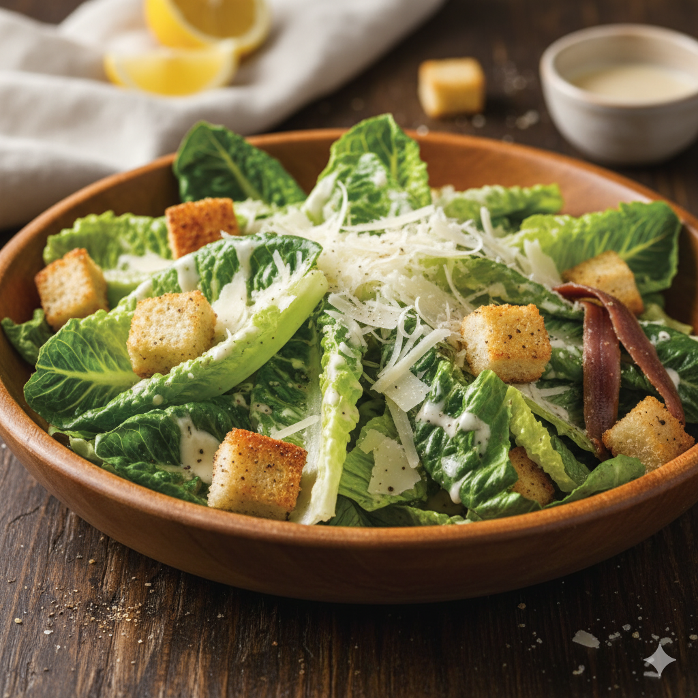
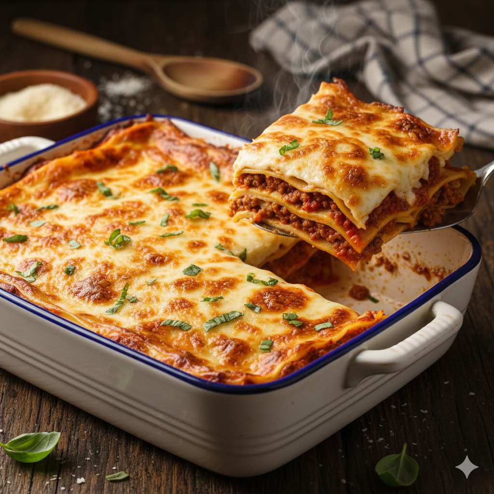

Home
Caeser Salad
Published in 2025-11-06

Description
The Caeser Salad is one of the world's most recognizable and popular green salads. It is characterized by its simplicity, its sharp, savory dressing, and its satisfying mix of textures
Ingredients
-
Salad Base
- 2 heads Romaine Lettuce (also called Cos), washed and chopped
- 1/2 cup Parmesan Cheese, grated or shaved
- 2 cups Croutons, preferably homemade and garlic-flavored
-
The Classic Caesar Dressing
- 1 large Egg Yolk (or one coddled egg)
- 1/2 cup Extra Virgin Olive Oil
- 2 cloves Garlic, minced or crushed
- 1 tbsp Worcestershire Sauce
- 1 tsp Dijon Mustard (optional, but common)
- 2 tbsp Fresh Lemon Juice (or lime juice)
- 2-3 Anchovy Fillets (or 1 tsp anchovy paste)
- Salt and Black Pepper to taste
Kitchen Equipment
- Large Salad Bowl (for tossing the lettuce and dressing)
- Small Mixing Bowl or Food Processor (for preparing the dressing)
- Whisk or Immersion Blender (to properly emulsify the dressing)
- Cutting Board and Chef's Knife (for chopping lettuce and mincing garlic)
- Vegetable Peeler (for shaving Parmesan cheese)
- Tongs or Large Spoons (for gently tossing the salad)
Step-by-Step
- Preheat: Preheat your oven to 350°F (175°C).
- Cut Bread: Slice a baguette or firm bread into 1-inch cubes.
- Season: Toss the bread cubes in olive oil, minced garlic, salt, and pepperin a bowl.
- Bake: Spread on a baking sheet and bake for 10-15 minutes, or until golden brown and crisp. Let them cool completely.
- Mash:In a large wooden salad bowl, mash the garlic, anchovy fillets (or paste), and salt into a rough paste using the back of a spoon.
- Mix Liquids: Whisk in the lemon juice, Worcestershire sauce, and Dijon mustard(if using) until combined.
- Emulsify: Add the egg yolk. Whisking continuously, slowly drizzle in the olive oiluntil the dressing thickens and becomes creamy (emulsifies).
- Taste: Season the dressing with black pepper and adjust the salt or lemon juice to your preference.
- Prepare Greens: Add the chopped romaine lettuceto the bowl containing the dressing.
- Toss Gently: Toss the lettuce gently until every leaf is lightly coated with the dressing. Do this just before serving to keep the lettuce crisp.
- Add Toppings: Sprinkle in most of the Parmesan cheeseand half of the croutons. Toss once or twice to integrate them.
Serve
- Plate: Transfer the salad to serving plates or a serving bowl.
- Garnish: Top the salad with the remaining Parmesan cheeseand croutons.
- Optional Protein: The Caesar salad is often topped with sliced grilled chicken breast or shrimp to make it a main course.
See more recipes!
See more recipes!
Lasagna

Omelette-with Cheese and Fine Herbs